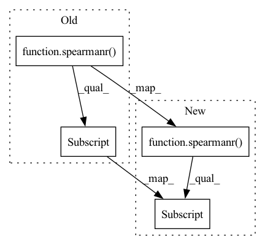

Pattern ID :19092
Before Change
def _sk_metric(preds, target):
sk_preds = preds.view(-1).numpy()
sk_target = target.view(-1).numpy()
return spearmanr(sk_target, sk_preds)[0]
@pytest.mark.parametrize(
"preds, target",After Change
def _sk_metric(preds, target):
if preds.ndim == 2:
return [spearmanr(t.numpy(), p.numpy())[0] for t, p in zip(target.T, preds.T)]
else:
return spearmanr(target.numpy(), preds.numpy())[0]
In pattern: SUPERPATTERN
Frequency: 4
Non-data size: 4
Instances Fragment ID: 62201333
Project Name: lightning-ai/metrics
Commit Name: 460aae3ab1c8a78523efe6d78817fcbf9e4b3839
Time: 2022-09-22
Author: skaftenicki@gmail.com
File Name: tests/unittests/regression/test_spearman.py
M Class Name: AnonimousClass
N Class Name: AnonimousClass
M Method Name: _sk_metric(2)
N Method Name: _sk_metric(2)
M Parent Class:
N Parent Class:
M File Name: tests/unittests/regression/test_spearman.py
N File Name: tests/unittests/regression/test_spearman.py
M Start Line: 63
M End Line: 65
N Start Line: 74
N End Line: 79
Before Change
def pearson_and_spearman(preds, labels):
pearson_corr = pearsonr(preds, labels)[0]
spearman_corr = spearmanr(preds, labels)[0]
return {
"pearson": pearson_corr,
"spearmanr": spearman_corr,
}After Change
def pearson_and_spearman(preds, labels):
pearson_corr = pearsonr(preds, labels)[0].tolist()
spearman_corr = spearmanr(preds, labels)[0] .tolist()
return {
"pearson": pearson_corr,
"spearmanr": spearman_corr, Fragment ID: 62201328
Project Name: huggingface/datasets
Commit Name: 060dc85e8ef4a668f328cf7255e1f5fa46cc3a22
Time: 2021-07-09
Author: lewis.c.tunstall@gmail.com
File Name: metrics/glue/glue.py
M Class Name: AnonimousClass
N Class Name: AnonimousClass
M Method Name: pearson_and_spearman(2)
N Method Name: pearson_and_spearman(2)
M Parent Class:
N Parent Class:
M File Name: metrics/glue/glue.py
N File Name: metrics/glue/glue.py
M Start Line: 97
M End Line: 98
N Start Line: 97
N End Line: 98
Before Change
def pearson_and_spearman(preds, labels):
pearson_corr = pearsonr(preds, labels)[0].item()
spearman_corr = spearmanr(preds, labels)[0] .item()
return {
"pearson": pearson_corr,
"spearmanr": spearman_corr,After Change
def pearson_and_spearman(preds, labels):
pearson_corr = float(pearsonr(preds, labels)[0])
spearman_corr = float(spearmanr(preds, labels)[0] )
return {
"pearson": pearson_corr,
"spearmanr": spearman_corr, Fragment ID: 62201331
Project Name: huggingface/datasets
Commit Name: 64dadeddb8d2fd9cd457bcaae74e7dd9878fc91b
Time: 2021-10-04
Author: 8515462+albertvillanova@users.noreply.github.com
File Name: metrics/glue/glue.py
M Class Name: AnonimousClass
N Class Name: AnonimousClass
M Method Name: pearson_and_spearman(2)
N Method Name: pearson_and_spearman(2)
M Parent Class:
N Parent Class:
M File Name: metrics/glue/glue.py
N File Name: metrics/glue/glue.py
M Start Line: 97
M End Line: 98
N Start Line: 97
N End Line: 98